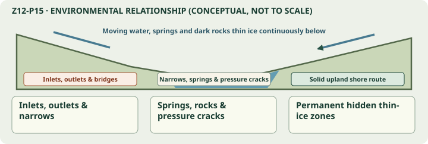

Z12-P15 · Extreme environments · Adapted historical material
Map hidden ice weak zones: inlets, outlets, springs, narrows and pressure cracks
Identify hydrological and shoreline features that continuously thin lake and river ice from underneath.
When it applies · Evaluating frozen water margins, lake maps and winter shorelines from safe land.
Equipment · Topographic lake map showing creeks, narrows, islands and bridges.

Actions
- Treat EVERY river, moving stream, lake inlet, outlet, bridge piling, culvert, dam outflow and narrow channel between islands as permanently hazardous weak-ice zones due to continuous warm-water current erosion underneath.[X01, E12]
- Watch for underwater springs, beaver lodges/channels, dark submerged logs/rocks (which absorb solar heat), flocks of waterfowl keeping open water and jagged pressure ridges/heaves that conceal thin refrozen seams.[X01, E12, ED]
- Recognize that shoreline edges often thaw first in late winter and weaken near dark docks, seawalls and runoff ditches.[X01, E12]
Failure recognition · Walking across a frozen lake neck between two islands where invisible underwater current narrowed 12-inch lake ice down to 1 inch.[X01, E12]
Verify · Trace every creek inlet, outlet, narrows and dark shoreline feature on the lake map from solid land before ever approaching the shore.[X01, E12, N02]
Stop or change course · Flowing water, narrows, culverts, springs, waterfowl openings and pressure cracks are strict exclusion zones—never step onto ice near them.[X01, E12]
Evidence and editorial notes
- E12 · Minnesota DNR · Ice Safety (current web edition)
- Section: Ice Safety > basic precautions · Conditions: Minnesota ice edges and travel routes
Support: No ice is universally safe. Strength can differ over short distances; appearance or tracks alone cannot establish a safe crossing.
Limitations: Currents, springs, snow insulation, and freeze-thaw cycles weaken ice invisibly. · Conflicting evidence: None; mandates shore-bound detour for foundational walking parties.
Editorial note: Maintains strict separation from specialized B013 ice chapters. · Specialist reviewer: Ice safety and search and rescue
Primary source · checked 2026-11-24 - N02 · USGS · Topographic Map Symbols (agency PDF)
- Section: Topographic Map Symbols > Contours, Water, Vegetation and Boundaries · Conditions: Interpreting standard USGS 1:24,000 and US Topo map sheets
Support: Contour spacing indicates slope steepness, index contours give elevation values, blue features mark water/wetlands and standard symbols distinguish roads, trails, cliffs and marshes.
Limitations: Small terrain hazards (boulders, undercut banks, fallen timber, thin ice) fall below map contour interval resolution. · Conflicting evidence: None; anchors terrain and contour interpretation cards.
Editorial note: Explains contour reading alongside map-resolution limitations. · Specialist reviewer: Cartography and search and rescue
Primary source · checked 2026-11-24 - X01 · Minnesota DNR · General Ice Thickness Guidelines (current web edition)
- Section: General Ice Thickness Guidelines > New Clear Ice Only · Conditions: Minnesota lakes and ponds during stable winter freezing
Support: Agency thickness guidelines apply ONLY to new, clear solid ice and are NEVER a guarantee of safety; white snow-ice is roughly half as strong, and currents, springs, inlets, outlets and snow cover create hidden thin zones.
Limitations: No ice is 100% safe; one drilled thickness check does not clear an entire crossing route. · Conflicting evidence: Directly reconciles B013 P01–P05, P11 and P17 with MN DNR warnings.
Editorial note: Enforces non-guarantee ice boundaries across Z12. · Specialist reviewer: Ice safety and winter search and rescue
Primary source · checked 2026-11-24
Source lineage · B013-P03 weak zones and MN DNR ice; adapted historical material · Classification · Adapted historical material.